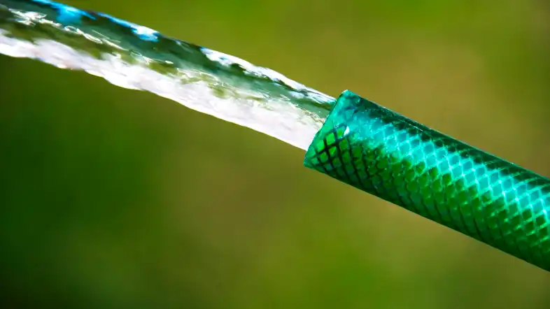
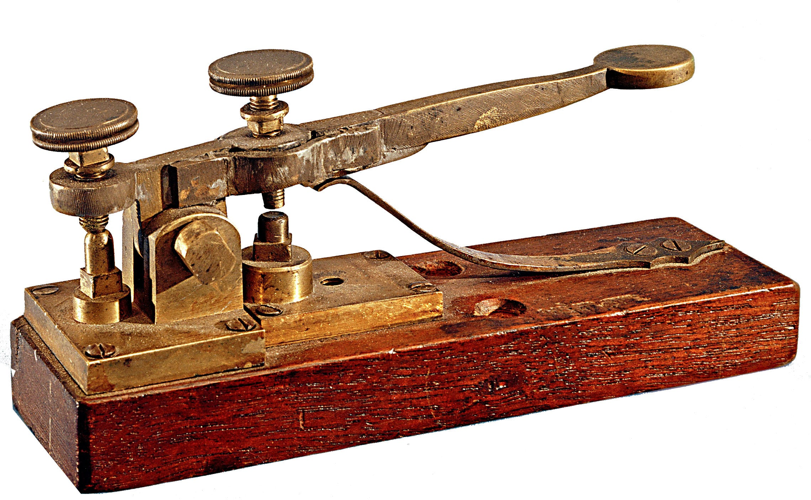
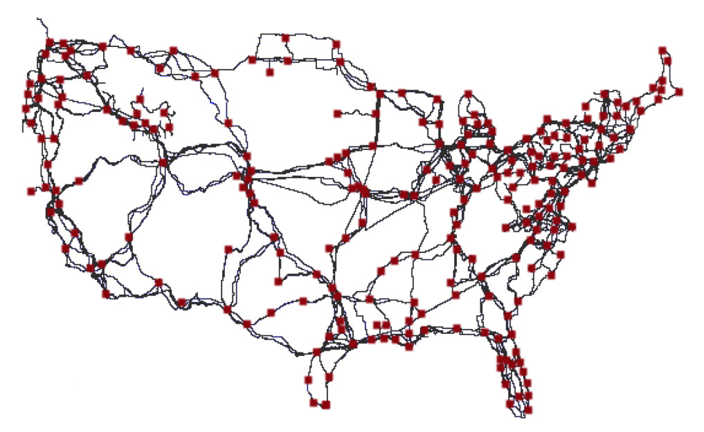
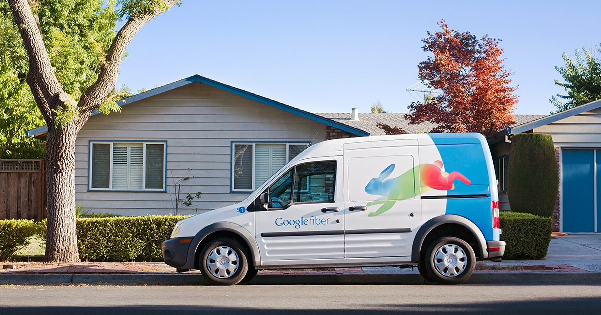

A fiber-optic cable traps and guides light from one end to the other
...similar to how a hose traps and guides water from one end to the other.

Computers send small pulses of light over a fiber-optic cable to communicate with each other
...kind of like how a telegraph communicates letters using sequences of beeps.

Fiber-optic cables are not the only way to connect computers.
Copper cables carry information as pulses of voltage.
Fiber can send signals farther than copper.
| Fiber | 50 kilometers |
| Copper | 100 meters |
Fiber can carry more data than copper.
| Fiber | 100 Gbps |
| Copper | 10 Gbps |
Fiber is often more expensive:
- More difficult to work with
- More expensive parts
...but labor is often the most expensive factor.
Fiber is used for the internet backbone


...and is more and more being used for high-speed consumer internet service

References
- Fiber-optic cable (Wikipedia)
- Fiber optic cables: How they work (YouTube)
- Morse code (Wikipedia)
- Internet Backbone (Wikipedia)
- The invisible seafaring industry that keeps the internet afloat (The Verge)
- InterTubes: A Study of the US Long-haul Fiber-optic Infrastructure
- How Amsterdam was wired for open access fiber (Ars Technica)